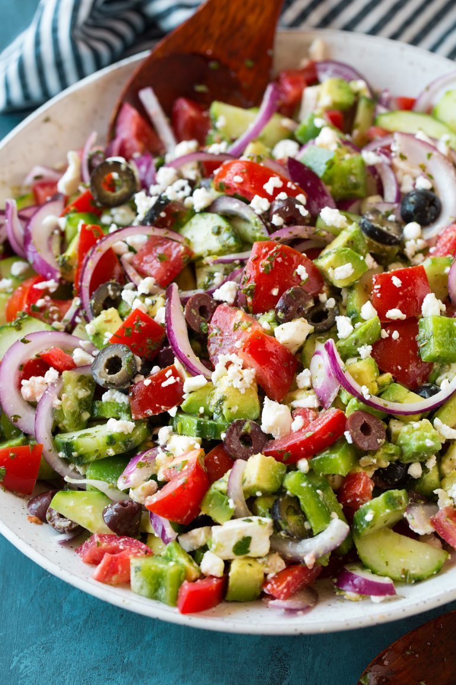

Best Greek Salad (With Advocado)

How to make a Greek vegetable salad
Ingredients for Greek Salad Dressing:
- 6 tbsp olive oil
- 1 1/2 tbsp fresh lemon juice
- 1 tbsp red wine vinegar
- 1 1/2 tsp minced garlic (1 large clove)
- 1 1/2 tbsp finely minced fresh parsley
- 1 tsp dried oregano
- 3/4 tsp honey
- salt, to taste
- 4 medium Roma tomatoes, diced (10 oz)
- 1 medium english cucumber, optionally peeled and sliced into half moons
- 1/2 small red onion, thinly sliced or diced, rinsed and drained
- 1 small green or yellow bell pepper, seeds and ribs removed, chopped
- 3/4 cup kalamata or black olives, drained and sliced
- 4 oz. crumbled feta cheese (about 1 cup)
- 1 medium advocado (not too soft), diced
- Add all of the dressing ingredients to a small mixing bowl and whisk well to blend, season with salt to taste and store in refrigerator until ready to use.
- Add tomatoes, cucumber, monion, bell pepper, olives, advocado and feta to a salad bowl.
- Drizzle dressing over top and gently toss to evenly coat. Add dressing within a few minutes off serving for best results.